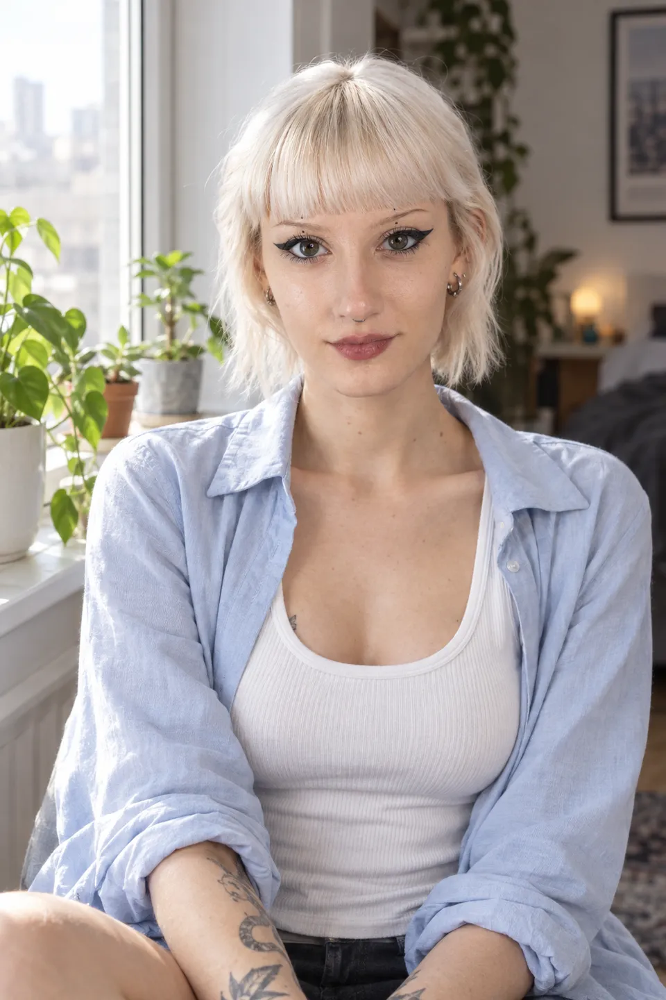
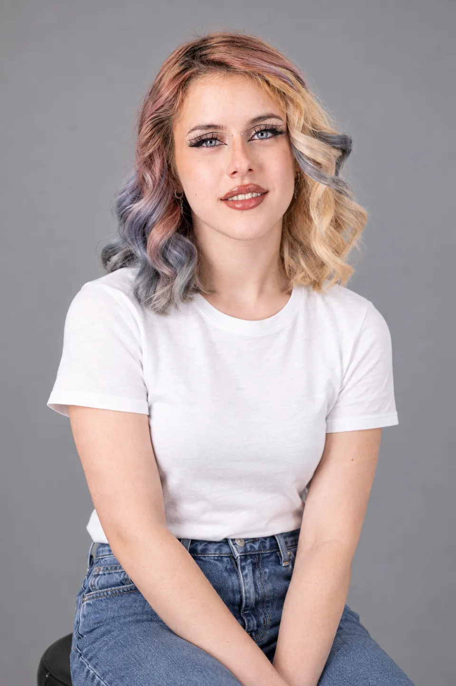
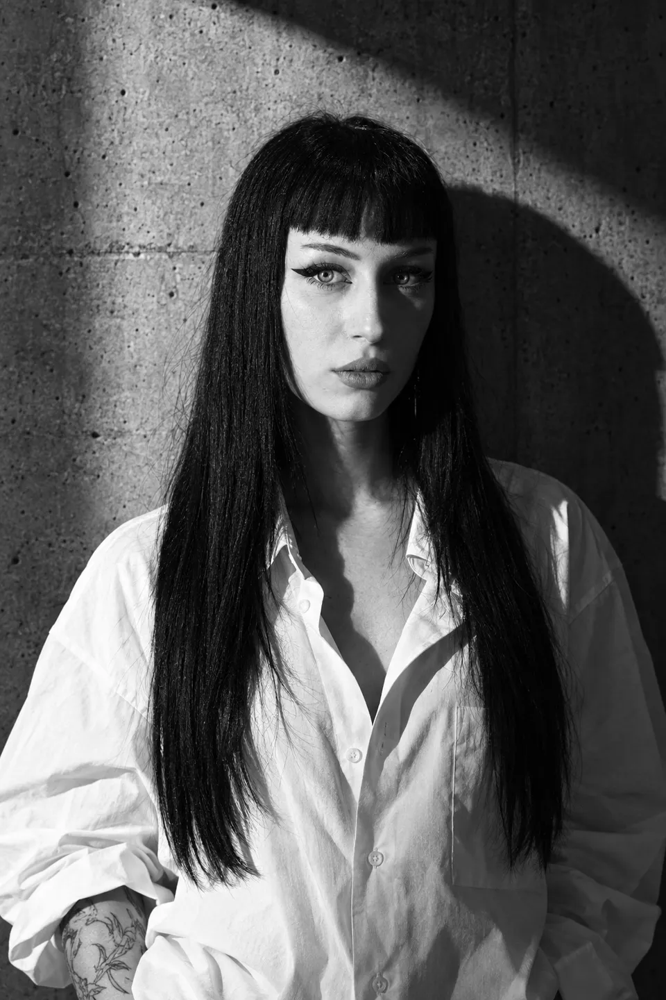

Scrivi a parole libere, come parli. Mentre scrivi, il direttore legge la frase e accende da solo le pillole: luce, vestiti, formato, inquadratura. Le parole che ha capito si sottolineano; ogni pillola accesa da lui ha la scintilla e si cambia o si spegne con un tocco. Non costa niente e non genera niente: prepara soltanto.

Greta ✕ + Aggiungi qualcunolei in giubbotto di pelle e jeans neri, in un parcheggio sotterraneo di notte, luce dura da destra, foto orizzontale a mezzo busto
Quando uno scatto ti piace, "Salva come ricetta": si tengono scena, luce, vestiti, formato e look, non la persona. La ricetta si riusa con chiunque del registro, in un tocco, e per le agenzie diventa il kit del brand. Le ricette stanno in cima a Crea, prima delle idee.
Luce di taglio da destra · dolcevita nero · orizzontale
Controluce · abito di raso nero · cinema
Finestra · maglione blu · quadrato · logo nel kit
DOPO "USA CON…": SCELGO ASIA
In cima a Crea si sceglie fra "Scatto" e "Serie". Nella serie si fissano una volta persona, vestiti, luce e look (il lucchetto), e si scrivono le situazioni, una per riga, fino a 6. Il primo scatto accettato diventa il riferimento degli altri: stesso vestito, stessa luce, sembra lo stesso servizio fotografico. Il prezzo è quello degli scatti, in chiaro prima di partire; ogni scatto che non tiene il volto non si paga.

Chiara 🔒 Camicia di lino bianca 🔒 Golden hour 🔒 Naturale · verticale · AltaLe situazioni

Anteprima del mockup: le foto qui sono segnaposto presi dal sito. Nella serie vera sono tutte della stessa persona, con lo stesso vestito e la stessa luce.